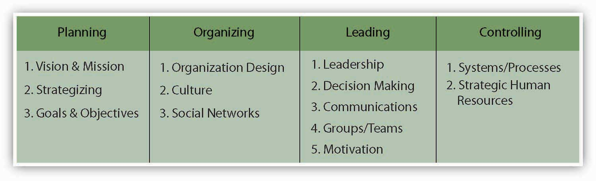
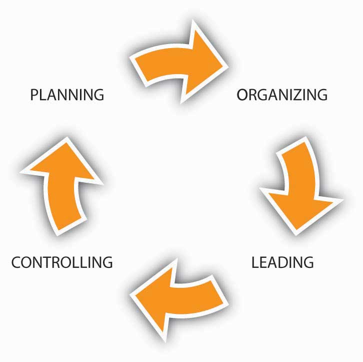

Reading this chapter will help you do the following:
This chapter helps you to understand the key elements of organizational control, often seen in the form of internal systems and processes, as they relate to the planning-organizing-leading-controlling (P-O-L-C) framework. While there are many possible forms and formats, organizational controls should serve two basic functions. First, they should help managers determine whether and why their strategy is achieving the desired results. Second, they should be an early warning system in cases where the organization is getting a little (or a lot) off track.
Figure 15.2 The P-O-L-C Framework
Newell Company grew to be a diversified manufacturer and marketer of simple household items, cookware, and hardware. In the early 1950s, Newell Company’s business consisted solely of manufactured curtain rods that were sold through hardware stores and retailers like Sears. Since the 1960s, however, the company has diversified extensively through acquisitions of businesses for paintbrushes, writing pens, pots and pans, hairbrushes, and the like. Over 90% of its growth can be attributed to these many small acquisitions, whose performance Newell improved tremendously through aggressive restructuring and its corporate emphasis on cost cutting and cost controls. Usually within a year of the acquisition, Newell would bring in new leadership and install its own financial controller in the acquired unit. Then, three standard sets of controls were introduced: an integrated financial accounting system, a sales and order processing and tracking system, and a flexible manufacturing system. Once these systems were in place, managers were able to control costs by limiting expenses to those previously budgeted. Administration, accounting, and customer-related financial accounting aspects of the acquired business were also consolidated into Newell’s corporate headquarters to further reduce and control costs.
While Newell Company’s 16 different lines of business may appear quite different, they all share the common characteristics of being staple manufactured items sold primarily through volume retail channels like Wal-Mart, Target, and Kmart. Because Newell operates each line of business autonomously (separate manufacturing, research and development [R&D], and selling responsibilities for each), it is perhaps best described as pursuing a related, linked diversification strategy. The common linkages are both internal (accounting systems, product merchandising skills, and acquisition competency) and external (distribution channel of volume retailers). Beyond its internal systems and processes, Newell was also able to control costs through outcome controls. That is, business managers were paid a bonus based on the profitability of their particular unit—in fact, the firm’s strategy is to achieve profits, not simply growth at the expense of profits. Newell managers could expect a base salary equal to the industry average but could earn bonuses ranging from 35% to 100% based on their rank and unit profitability.
In 1999, Newell acquired Rubbermaid, a U.S.-based manufacturer of flexible plastic products like trash cans, reheatable and freezable food containers, and a broad range of other plastic storage containers designed for home and office use. While Rubbermaid was highly innovative (over 80% of its growth has come from internal new product development), it had difficulty controlling costs and was losing ground against powerful customers like Wal-Mart. Newell believed that the market power it wielded with retailers like Wal-Mart would help it turn Rubbermaid’s prospects around. The acquisition deal between these two companies resulted in a single company that was twice as big and became known as Newell Rubbermaid Inc. (NYSE: NWL). In 2010, Fortune named Newell Rubbermaid the number 7 “Most Admired Company” in the home equipment and furnishings category.
Case written by [citation redacted per publisher request]. Based on information retrieved April 3, 2010, from http://www.bain.com/masteringthemerger/case_example_new_rbbmd_trans.asp and from the Newell Rubbermaid Web site: http://www.newellrubbermaid.com/public/Our-Company/Our-History.aspx.
Up to this point you have probably become familiar with the planning, organizing, and leading components of the P-O-L-C framework. This section addresses the controlling component, often taking the form of internal systems and process, to complete your understanding of P-O-L-C. As you know, planning comprises all the activities associated with the formulation of your strategy, including the establishment of near- and long-term goals and objectives. Organizing and leading are the choices made about the way people work together and are motivated to achieve individual and group goals and objectives.
The fourth facet of P-O-L-C, organizational controlThe process by which an organization influences its subunits and members to behave in ways that lead to the attainment of organizational goals and objectives., refers to the process by which an organization influences its subunits and members to behave in ways that lead to the attainment of organizational goals and objectives. When properly designed, such controls should lead to better performance because an organization is able to execute its strategy better.Kuratko, D. F., Ireland, R. D., & Hornsby. J. S. (2001). Improving firm performance through entrepreneurial actions: Acordia’s corporate entrepreneurship strategy. Academy of Management Executive, 15(4), 60–71. As shown in the the P-O-L-C framework figure, we typically think of or talk about control in a sequential sense, where controls (systems and processes) are put in place to make sure everything is on track and stays on track. Controls can be as simple as a checklist, such as that used by pilots, flight crews, and some doctors.Retrieved December 9, 2008, from http://www.thehealthcareblog.com/the_health_care_blog/2007/12/pilots-use-chec.html Increasingly, however, organizations manage the various levels, types, and forms of control through systems called Balanced Scorecards. We will discuss these in detail later in the chapter.
Organizational control typically involves four steps: (1) establish standards, (2) measure performance, (3) compare performance to standards, and then (4) take corrective action as needed. Corrective action can include changes made to the performance standards—setting them higher or lower or identifying new or additional standards. Sometimes we think of organizational controls only when they seem to be absent, as in the 2008 meltdown of U.S. financial markets, the crisis in the U.S. auto industry, or the much earlier demise of Enron and MCI/Worldcom due to fraud and inadequate controls. However, as shown in the figure, good controls are relevant to a large spectrum of firms beyond Wall Street and big industry.
We tend to think about controls only in the for-profit organization context. However, controls are relevant to a broad spectrum of organizations, including governments, schools, and charities. Jack Siegel, author of A Desktop Guide for Nonprofit Directors, Officers, and Advisors: Avoiding Trouble While Doing Good, outlines this top 10 list of financial controls that every charity should put in place:
Control 1—Require two signatures for checks written on bank and investment accounts. This prevents unapproved withdrawals and payments.
Control 2—The organization’s bank statements should be reconciled on a monthly basis by someone who does not have signature authority over the accounts. This is a further check against unapproved withdrawals and payments.
Control 3—Since cash is particularly susceptible to theft, organizations should eliminate the use of cash to the extent possible.
Control 4—Organizations should only purchase goods from an approved list of vendors. This provides protection from phony invoices submitted by insiders.
Control 5—Many charities have discovered “ghost employees” on their payrolls. To minimize this risk, organizations should tightly control the payroll list by developing a system of reports between payroll/accounting and the human resources department.
Control 6—Organizations should require all otherwise reimbursable expenses to be preauthorized. Travel and entertainment expenses should be governed by a clearly articulated written policy that is provided to all employees.
Control 7—Physical inventories should be taken on a regular and periodic basis and then be reconciled against the inventories carried on the books. Besides the possible detection of theft, this control also provides a basis for an insurance claim in the case of a fire, flood, or other disaster.
Control 8—Every organization should develop an annual budgeting process. The nonprofit’s employees should prepare the budget, but the board should review and approve it.
Control 9—Organizations should use a competitive bidding process for purchases above a certain threshold. In reviewing bids, organizations should look for evidence of collusion.
Control 10—Organizations that regularly received grants with specific requirements should have someone who is thoroughly versed in grant administration.
Retrieved January 30, 2009, from http://www.charitygovernance.com/charity_governance/2007/10/ten-financial-c.html#more.
Organizational controls provide significant benefits, particularly when they help the firm stay on track with respect to its strategy. External stakeholders, too, such as government, investors, and public interest groups have an interest in seeing certain types or levels of control are in place. However, controls also come at a cost. It is useful to know that there are trade-offs between having and not having organizational controls, and even among the different forms of control. Let’s look at some of the predominant costs and benefits of organizational controls, which are summarized in the following figure.
Controls can cost the organization in several areas, including (1) financial, (2) damage to culture and reputation, (3) decreased responsiveness, and (4) botched implementation. An example of financial cost is the fact that organizations are often required to perform and report the results of a financial audit. These audits are typically undertaken by external accounting firms, which charge a substantial fee for their services; the auditor may be a large firm like Accenture or KPMG, or a smaller local accounting office. Such audits are a way for banks, investors, and other key stakeholders to understand how financially fit the organization is. Thus, if an organization needs to borrow money from banks or has investors, it can only obtain these benefits if it incurs the monetary and staffing costs of the financial audit.
Controls also can have costs in terms of organization culture and reputation. While you can imagine that organizations might want to keep track of employee behavior, or otherwise put forms of strict monitoring in place, these efforts can have undesirable cultural consequences in the form of reduced employee loyalty, greater turnover, or damage to the organization’s external reputation. Management researchers such as the late London Business School professor Sumantra Ghoshal have criticized theory that focuses on the economic aspects of man (i.e., assumes that individuals are always opportunistic). According to Ghoshal, “A theory that assumes that managers cannot be relied upon by shareholders can make managers less reliable.”Ghoshal S., & Moran, P. (1996). Bad for practice: A critique of the transaction cost theory. Academy of Management Review. 21(1), 13–47. Such theory, he warned, would become a self-fulfilling prophecy.
Less theoretical are practical examples such as Hewlett-Packard’s (HP) indictment on charges of spying on its own board of directors. In a letter to HP’s board, director Tom Perkins said his accounts were “hacked” and attached a letter from AT&T explaining how the breach occurred. Records of calls made from Perkins’s home phone were obtained simply with his home phone number and the last four digits of his Social Security number. His long-distance account records were obtained when someone called AT&T and pretended to be Perkins, according to the letter from AT&T.Retrieved January 30, 2009, from http://i.n.com.com/pdf/ne/2006/perkins_letter.pdf HP Chairman Patricia Dunn defended this rather extreme form of control as legal, but the amount of damage to the firm’s reputation from these charges led the firm to discontinue the practice. It also prompted the resignation of several directors and corporate officers.Retrieved January 30, 2009, from http://news.zdnet.com/2100-9595_22-149452.html
The third potential cost of having controls is that they can afford less organizational flexibility and responsiveness. Typically, controls are put in place to prevent problems, but controls can also create problems. For instance, the Federal Emergency Management Agency (FEMA) is responsible for helping people and business cope with the consequences of natural disasters, such as hurricanes. After Hurricane Katrina devastated communities along the U.S. Gulf Coast in 2005, FEMA found that it could not provide prompt relief to the hurricane victims because of the many levels of financial controls that it had in place.U.S. Government Printing Office. (2006, February 15). Executive summary. Select Bipartisan Committee to Investigate the Preparation for and Response to Hurricane Katrina.
The fourth area of cost, botched implementation, may seem obvious, but it is more common than you might think (or than managers might hope). Sometimes the controls are just poorly understood, so that their launch creates significant unintended, negative consequences. For example, when Hershey Foods put a new computer-based control system in place in 1999, there were so many problems with its installation that it was not able to fulfill a large percentage of its Halloween season chocolate sales that year. It did finally get the controls in working order, but the downtime created huge costs for the company in terms of inefficiencies and lost sales.Retrieved January 30, 2009, from Hershey profits for 4Q 1999 down 11% due to SAP implementation problem. http://www.greenspun.com/bboard/q-and-a-fetch-msg.tcl?msg_id=002SUM Some added controls may also interfere with others. For instance, a new quality control system may improve product performance but also delay product deliveries to customers.
Although organizational controls come at some cost, most controls are valid and valuable management tools. When they are well designed and implemented, they provide at least five possible areas of benefits, including (1) improved cost and productivity control, (2) improved quality control, (3) opportunity recognition, (4) better ability to manage uncertainty and complexity, and (5) better ability to decentralize decision making. Let’s look at each one of these benefits in turn.
Key Costs
Key Benefits
First, good controls help the organization to be efficient and effective by helping managers to control costs and productivity levels. Cost can be controlled using budgets, where managers compare actual expenses to forecasted ones. Similarly, productivity can be controlled by comparing how much each person can produce, in terms of service or products. For instance, you can imagine that the productivity of a fast-food restaurant like McDonald’s depends on the speed of its order takers and meal preparers. McDonald’s can look across all its restaurants to identify the target speed for taking an order or wrapping a burger, then measure each store’s performance on these dimensions.
Quality control is a second benefit of controls. Increasingly, quality can be quantified in terms of response time (i.e., How long did it take you to get that burger?) or accuracy (Did the burger weigh one-quarter pound?). Similarly, Toyota tracks the quality of its cars according to hundreds of quantified dimensions, including the number of defects per car. Some measures of quality are qualitative, however. For instance, Toyota also tries to gauge how “delighted” each customer is with its vehicles and dealer service. You also may be familiar with quality control through the Malcolm Baldrige National Quality Program Award. The Baldrige award is given by the president of the United States to businesses—manufacturing and service, small and large—and to education, health care, and nonprofit organizations that apply and are judged to be outstanding in seven areas: leadership; strategic planning; customer and market focus; measurement, analysis, and knowledge management; human resource focus; process management; and results.Retrieved January 30, 2009, from http://www.nist.gov/public_affairs/factsheet/baldfaqs.htm Controlling—how well the organization measures and analyzes its processes—is a key criterion for winning the award. The Baldrige award is given to organizations in a wide range of categories and industries, from education to ethics to manufacturing.
The third area by which organizations can benefit from controls is opportunity recognition. Opportunities can come from outside of the organization and typically are the result of a surprise. For instance, when Nestlé purchased the Carnation Company for its ice cream business, it had also planned to sell off Carnation’s pet food line of products. However, through its financial controls, Nestlé found that the pet food business was even more profitable than the ice cream, and kept both. Opportunities can come from inside the organization too, as would be the case if McDonald’s finds that one of its restaurants is exceptionally good at managing costs or productivity. It can then take this learned ability and transfer it to other restaurants through training and other means.
Controls also help organizations manage uncertainty and complexity. This is a fourth area of benefit from well-designed and implemented controls. Perhaps the most easily understood example of this type of benefit is how financial controls help an organization navigate economic downturns. Without budgets and productivity controls in place, the organization might not know it has lost sales or expenses are out of control until it is too late.
Measurement, Analysis, and Improvement of Organizational Performance: How Do You Measure, Analyze, and then Improve Organizational Performance? (45 points)
Describe how your organization measures, analyzes, aligns, reviews, and improves its performance using data and information at all levels and in all parts of your organization. Describe how you systematically use the results of reviews to evaluate and improve processes.
Within your response, include answers to the following questions:
Performance Measurement
Performance Analysis, Review, and Improvement
Retrieved January 30, 2009, from http://www.quality.nist.gov.
The fifth area of benefit in organizational control is related to decentralized decision making. Organization researchers have long argued that performance is best when those people and areas of the organization that are closest to customers and pockets of uncertainty also have the ability (i.e., the information and authority) to respond to them.Galbraith, J. R. (1974). Organization design: An information processing view. Interfaces, 4, 28–36. Galbraith believes that “the greater the uncertainty of the task, the greater the amount of information that must be processed between decision makers during the execution of the task to get a given level of performance.” Firms can reduce uncertainty through better planning and coordination, often by rules, hierarchy, or goals. Galbraith states that “the critical limiting factor of an organizational form is the ability to handle the non-routine events that cannot be anticipated or planned for.” Going back to our McDonald’s example, you can imagine that it would be hard to give a store manager information about her store’s performance and possible choices if information about performance were only compiled at the city, region, or corporate level. With store-level performance tracking (or, even better, tracking of performance by the hour within a store), McDonald’s gives store managers the information they need to respond to changes in local demand. Similarly, it equips McDonald’s to give those managers the authority to make local decisions, track that decision-making performance, and feed it back into the control and reward systems.
This chapter introduced the basics of controls, the process by which an organization influences its subunits and members to behave in ways that lead to attaining organizational goals and objectives. When properly designed, controls lead to better performance by enabling the organization to execute its strategy better. Managers must weigh the costs and benefits of control, but some minimum level of control is essential for organizational survival and success.
Recognizing that organizational controls can be categorized in many ways, it is helpful at this point to distinguish between two sets of controls: (1) strategic controls and (2) management controls, sometimes called operating controls. Harrison, J. S., & St. John, C. H. (2002). Foundations in Strategic Management (2nd ed., 118–129). Cincinnati, OH: South-Western College.
Imagine that you are the captain of a ship. The strategic controls make sure that your ship is going in the right direction; management and operating controls make sure that the ship is in good condition before, during, and after the voyage. With that analogy in mind, strategic controlThe process by which an organization tracks the strategy as it is being implemented, detecting any problem areas or potential problem areas that might suggest that the strategy is incorrect, and making any necessary adjustments. is concerned with tracking the strategy as it is being implemented, detecting any problem areas or potential problem areas suggesting that the strategy is incorrect, and making any necessary adjustments.Venkataraman, S., & Sarasvathy, S. D. (2001). Strategy and entrepreneurship: Outlines of an untold story. In M. A. Hitt, R. E. Freeman, & J. S. Harrison (Eds.), Handbook of strategic management (650–668). Oxford: Blackwell. Strategic controls allow you to step back and look at the big picture and make sure all the pieces of the picture are correctly aligned.
Ordinarily, a significant time span occurs between initial implementation of a strategy and achievement of its intended results. For instance, if you wanted to captain your ship from San Diego to Seattle you might need a crew, supplies, fuel, and so on. You might also need to wait until the weather lets you make the trip safely! Similarly, in larger organizations, during the time you are putting the strategy into place, numerous projects are undertaken, investments are made, and actions are undertaken to implement the new strategy. Meanwhile, the environmental situation and the firm’s internal situation are developing and evolving. The economy could be booming or perhaps falling into recession. Strategic controls are necessary to steer the firm through these events. They must provide some means of correcting direction on the basis of intermediate performance and new information.
Operational controlA process concerned with executing the strategy., in contrast to strategic control, is concerned with executing the strategy. Where operational controls are imposed, they function within the framework established by the strategy. Normally these goals, objectives, and standards are established for major subsystems within the organization, such as business units, projects, products, functions, and responsibility centers.Matthews, J. (1999). Strategic moves. Supply Management, 4(4), 36–37. Typical operational control measures include return on investment, net profit, cost, and product quality. These control measures are essentially summations of finer-grained control measures. Corrective action based on operating controls may have implications for strategic controls when they involve changes in the strategy.
It is also valuable to understand that, within the strategic and operational levels of control, there are several types of control. The first two types can be mapped across two dimensions: level of proactivity and outcome versus behavioral. The following table summarizes these along with examples of what such controls might look like.
Proactivity can be defined as the monitoring of problems in a way that provides their timely prevention, rather than after the fact reaction. In management, this is known as feedforward controlThe active monitoring of problems in a way that provides their timely prevention, rather than after-the-fact reaction.; it addresses what can we do ahead of time to help our plan succeed. The essence of feedforward control is to see the problems coming in time to do something about them. For instance, feedforward controls include preventive maintenance on machinery and equipment and due diligence on investments.
Table 15.1 Types and Examples of Control
| Control Proactivity | Behavioral control | Outcome control |
|---|---|---|
| Feedforward control | Organizational culture | Market demand or economic forecasts |
| Concurrent control | Hands-on management supervision during a project | The real-time speed of a production line |
| Feedback control | Qualitative measures of customer satisfaction | Financial measures such as profitability, sales growth |
The process of monitoring and adjusting ongoing activities and processes is known as concurrent controlProcesses that entail monitoring and adjusting ongoing activities.. Such controls are not necessarily proactive, but they can prevent problems from becoming worse. For this reason, we often describe concurrent control as real-time control because it deals with the present. An example of concurrent control might be adjusting the water temperature of the water while taking a shower.
Finally, feedback controlsProcesses that involve the gathering of information about a completed activity, evaluating that information, and taking steps to improve the similar activities in the future. involve gathering information about a completed activity, evaluating that information, and taking steps to improve the similar activities in the future. This is the least proactive of controls and is generally a basis for reactions. Feedback controls permit managers to use information on past performance to bring future performance in line with planned objectives.
In this latter sense, all these types of control function as a feedback mechanism to help leaders and managers make adjustments in the strategy, as perhaps is reflected by changes in the planning, organizing, and leading components. This feedback loop is characterized in the following figure.
Figure 15.5 Controls as Part of a Feedback Loop
Why might it be helpful for you to think of controls as part of a feedback loop in the P-O-L-C process? Well, if you are the entrepreneur who is writing the business plan for a completely new business, then you would likely start with the planning component and work your way to controlling—that is, spell out how you are going to tell whether the new venture is on track. However, more often, you will be stepping into an organization that is already operating, and this means that a plan is already in place. With the plan in place, it may be then up to you to figure out the organizing, leading, or control challenges facing the organization.
Controls also differ depending on what is monitored, outcomes or behaviors. Outcome controlsProcesses that are generally preferable when just one or two performance measures (say, return on investment or return on assets) are good gauges of a business’s health. are generally preferable when just one or two performance measures (say, return on investment or return on assets) are good gauges of a business’s health. Outcome controls are effective when there’s little external interference between managerial decision making on the one hand and business performance on the other. It also helps if little or no coordination with other business units exists.
Behavioral controlsThe direct evaluation of managerial and employee decision making, not of the results of managerial decisions. involve the direct evaluation of managerial and employee decision making, not of the results of managerial decisions. Behavioral controls tie rewards to a broader range of criteria, such as those identified in the Balanced Scorecard. Behavioral controls and commensurate rewards are typically more appropriate when there are many external and internal factors that can affect the relationship between a manager’s decisions and organizational performance. They’re also appropriate when managers must coordinate resources and capabilities across different business units.
Finally, across the different types of controls in terms of level of proactivity and outcome versus behavioral, it is important to recognize that controls can take on one of two predominant forms: financial and nonfinancial controls. Financial controlThe management of a firm’s costs and expenses to control them in relation to budgeted amounts. involves the management of a firm’s costs and expenses to control them in relation to budgeted amounts. Thus, management determines which aspects of its financial condition, such as assets, sales, or profitability, are most important, tries to forecast them through budgets, and then compares actual performance to budgeted performance. At a strategic level, total sales and indicators of profitability would be relevant strategic controls.
Without effective financial controls, the firm’s performance can deteriorate. PSINet, for example, grew rapidly into a global network providing Internet services to 100,000 business accounts in 27 countries. However, expensive debt instruments such as junk bonds were used to fuel the firm’s rapid expansion. According to a member of the firm’s board of directors, PSINet spent most of its borrowed money “without the financial controls that should have been in place.”Woolley, S. (2001, May). Digital hubris. Forbes, 66–70. With a capital structure unable to support its rapidly growing and financially uncontrolled operations, PSINet and 24 of its U.S. subsidiaries eventually filed for bankruptcy.Retrieved January 30, 2009, from PSINet announces NASDAQ delisting. (2001, June 1). http://www.psinet.com While we often think of financial controls as a form of outcome control, they can also be used as a behavioral control. For instance, if managers must request approval for expenditures over a budgeted amount, then the financial control also provides a behavioral control mechanism as well.
Increasing numbers of organizations have been measuring customer loyalty, referrals, employee satisfaction, and other such performance areas that are not financial. In contrast to financial controls, nonfinancial controlsProcesses that track aspects of the organization that aren’t immediately financial in nature but are expected to lead to positive financial performance outcomes. track aspects of the organization that aren’t immediately financial in nature but are expected to lead to positive performance outcomes. The theory behind such nonfinancial controls is that they should provide managers with a glimpse of the organization’s progress well before financial outcomes can be measured.Ittner, C., & Larcker, D. F. (2003, November). Coming up short on nonfinancial performance measurement. Harvard Business Review, 2–8. And this theory does have some practical support. For instance, GE has found that highly satisfied customers are the best predictor of future sales in many of its businesses, so it regularly tracks customer satisfaction.
Organizational controls can take many forms. Strategic controls help managers know whether a chosen strategy is working, while operating controls contribute to successful execution of the current strategy. Within these types of strategy, controls can vary in terms of proactivity, where feedback controls were the least proactive. Outcome controls are judged by the result of the organization’s activities, while behavioral controls involve monitoring how the organization’s members behave on a daily basis. Financial controls are executed by monitoring costs and expenditure in relation to the organization’s budget, and nonfinancial controls complement financial controls by monitoring intangibles like customer satisfaction and employee morale.
As we discussed in the previous section, financial controls are a key element of organizational success and survival. There are three basic financial reports that all managers need to understand and interpret to manage their businesses successfully: (1) the balance sheet, (2) the income/profit and loss (P&L) statement, and (3) the cash flow statement. These three reports are often referred to collectively as “the financials.” Banks often require a projection of these statements to obtain financing.
Financial controls provide the basis for sound management and allow managers to establish guidelines and policies that enable the business to succeed and grow. BudgetingA listing of all planned expenses and revenues., for instance, generally refers to a simple listing of all planned expenses and revenues. On the basis of this listing, and a starting balance sheet, you can project a future one. The overall budget you create is a monthly or quarterly projection of what the balance sheet and income statement will look like but again based on your list of planned expenses and revenues.
While you do not need to be an accountant to understand this section, good managers have a good grasp of accounting fundamentals. You might want to open a window to AccountingCoach.com or a similar site as you work through this section to begin to build your accounting knowledge tool kit.Retrieved October 21, 2008, from http://www.accountingcoach.com.
Imagine that you are on the board of Success-R-Us, an organization whose financial controls are managed in an excellent manner. Each year, after the organization has outlined strategies to reach its goals and objectives, funds are budgeted for the necessary resources and labor. As money is spent, statements are updated to reflect how much was spent, how it was spent, and what it obtained. Managers, who report to the board, use these financial statements, such as an income statement or balance sheet, to monitor the progress of programs and plans. Financial statements provide management with information to monitor financial resources and activities. The income statement shows the results of the organization’s operations, such as revenues, expenses, and profit or loss. The balance sheet shows what the organization is worth (assets) at a single point in time, and the extent to which those assets were financed through debt (liabilities) or owner’s investment (equity).
Success-R-Us conducts financial audits, or formal investigations, to ensure that financial management practices follow generally accepted procedures, policies, laws, and ethical guidelines. In Success-R-Us, audits are conducted both internally—by members of the company’s accounting department—and externally by Green Eyeshade Inc., an accounting firm hired for this purpose.
Financial ratio analysis examines the relationship between specific figures on the financial statements and helps explain the significance of those figures: By analyzing financial reports, the managers at Success-R-Us are able to determine how well the business is doing and what may need to be done to improve its financial viability.
While actual financial performance is always historical, Success-R-Us’s proactive managers plan ahead for the problems the business is likely to encounter and the opportunities that may arise. To do this, they use pro forma financials, which are projections; usually these are projected for three fiscal years. Being proactive requires reading and analyzing the financial statements on a regular basis. Monthly, and sometimes daily or weekly, financial analysis is preferred. (In the business world as a whole, quarterly is more common, and some organizations do this only once a year, which is not often enough.) The proactive manager has financial data available based on actual results and compares them to the budget. This process points out weaknesses in the business before they reach crisis proportion and allows the manager to make the necessary changes and adjustments before major problems develop.
Years ago, Success-R-Us experienced problems because its management style was insufficiently proactive. A reactive manager waits to react to problems and then solves them by crisis management. This type of manager goes from crisis to crisis with little time in between to notice opportunities that may become available. The reactive manager’s business is seldom prepared to take advantage of new opportunities quickly. Businesses that are managed proactively are more likely to be successful, and this is the result that Success-R-Us is experiencing since it instituted a company-wide initiative to promote proactive controls.
Like most organizations, Success-R-Us uses computer software programs to do record keeping and develop financials. These programs provide a chart of accounts that can be individualized to the business and the templates for each account ledger, the general ledgers, and the financial reports. These programs are menu driven and user-friendly, but knowing how to input the data correctly is not enough. A manager must also know where to input each piece of data and how to analyze the reports compiled from the data. Widely accepted accounting guidelines dictate that if you have not learned a manual record-keeping system, you need to do this before attempting to use a computerized system.
The balance sheet is a snapshot of the business’s financial position at a certain point in time. This can be any day of the year, but balance sheets are usually done at the end of each month. With a budget in hand, you project forward and develop pro forma statements to monitor actual progress against expectations.
As shown in the following table, this financial statement is a listing of total assets (what the business owns—items of value) and total liabilities (what the business owes). The total assets are broken down into subcategories of current assets, fixed assets, and other assets. The total liabilities are broken down into subcategories of current liabilities, long-term liabilities/debt, and owner’s equity.
Current assetsAssets that are cash or can be readily converted to cash in the short term, such as accounts receivable or inventory. are those assets that are cash or can be readily converted to cash in the short term, such as accounts receivable or inventory. In the balance sheet shown for Success-R-Us, the current assets are cash, petty cash, accounts receivable, inventory, and supplies.
Table 15.2 Sample Balance Sheet
|
Success-R-Us Balance Sheet December 31, 2009 |
|||
|---|---|---|---|
| Assets | Liabilities | ||
| Current Assets | Current Liabilities | ||
| Cash | $12,300 | Notes Payable | $5,000 |
| Petty Cash | 100 | Accounts Payable | 35,900 |
| Wages Payable | 14,600 | ||
| Accounts Receivable | 40,500 | Interest Payable | 2,900 |
| Inventory | 31,000 | Warranty Liability | 1,100 |
| Supplies | 5,300 | ||
| Total Current Assets | 89,000 | Total Current Liabilities | 61,000 |
| Investments | 36,000 | Long-term Liabilities | |
| Notes Payable | 20,000 | ||
| Property, Plant and Equipment | Bonds Payable | 400,000 | |
| Land | 5,500 | Total Long-term Liabilities | 420,000 |
| Land Improvements | 6,500 | ||
| Buildings | 180,000 | ||
| Equipment | 201,000 | Total Liabilities | 481,000 |
| Less Accum. Depreciation | (56,000) | ||
| Prop., Plant, and Equipment net | 337,000 | ||
| Intangible Assets | Stockholders’ Equity | ||
| Goodwill | 105,000 | Common Stocks | 110,000 |
| Trade Names | 200,000 | Retained Earnings | 229,000 |
| Total Intangible Assets | 305,000 | Less Treasury Stock | (50,000) |
| Other Assets | 3,000 | ||
| Total Assets | $770,000 | Total Liability and Stockholder Equity | $770,000 |
Some business people define current assets as those the business expects to use or consume within the coming fiscal year. Thus, a business’s noncurrent assets would be those that have a useful life of more than 1 year. These include fixed assets and intangible assets.
Fixed assetsAssets that are not easily converted to cash in the short term; that is, they are assets that only change over the long term. Land, buildings, equipment, vehicles, furniture, and fixtures are some examples of fixed assets. are those assets that are not easily converted to cash in the short term; that is, they are assets that only change over the long term. Land, buildings, equipment, vehicles, furniture, and fixtures are some examples of fixed assets. In the balance sheet for Success-R-Us, the fixed assets shown are furniture and fixtures and equipment. These fixed assets are shown as less accumulated depreciation.
Intangible assets (net)An asset that cannot be physically touched, or is not physical in nature. may also be shown on a balance sheet. These may be goodwill, trademarks, patents, licenses, copyrights, formulas, and franchises. In this instance, net means the value of intangible assets minus amortization.
Current liabilitiesLiabilities coming due in the short term, usually the coming year. are those coming due in the short term, usually the coming year. These are accounts payable; employment, income and sales taxes; salaries payable; federal and state unemployment insurance; and the current year’s portion of multiyear debt. A comparison of the company’s current assets and its current liabilities reveals its working capital. Many managers use an accounts receivable aging report and a current inventory listing as tools to help them in management of the current asset structure.
Long-term debtLiabilities may be bank notes or loans made to purchase the business's fixed asset structure. Long-term debt/liabilities come due in a time period of more than 1 year., or liabilities, may be bank notes or loans made to purchase the business’s fixed asset structure. Long-term debt/liabilities come due in a period of more than 1 year. The portion of a bank note that is not payable in the coming year is long-term debt/liability.
For example, Success-R-Us’s owner may take out a bank note to buy land and a building. If the land is valued at $50,000 and the building is valued at $50,000, the business’s total fixed assets are $100,000. If $20,000 is made as a down payment and $80,000 is financed with a bank note for 15 years, the $80,000 is the long-term debt.
Owner’s equity refers to the amount of money the owner has invested in the firm. This amount is determined by subtracting current liabilities and long-term debt from total assets. The remaining capital/owner’s equity is what the owner would have left in the event of liquidation, or the dollar amount of the total assets that the owner can claim after all creditors are paid.”
The profit and loss statement (P&L) shows the relation of income and expenses for a specific time interval. The income/P&L statement is expressed in a 1-month format, January 1 through January 31, or a quarterly year-to-date format, January 1 through March 31. This financial statement is cumulative for a 12-month fiscal period, at which time it is closed out. A new cumulative record is started at the beginning of the new 12-month fiscal period.
The P&L statement is divided into five major categories: (1) sales or revenue, (2) cost of goods sold/cost of sales, (3) gross profit, (4) operating expenses, and (5) net income. Let’s look at each category in turn.
Table 15.3 Sample Income Statement
|
Success-R-Us Income Statement For the year ended December 31, 2009 |
|
|---|---|
| Sales/Revenues (all on credit) | $500,000 |
| Cost of Goods Sold | 380,000 |
| Gross Profit | 120,000 |
| Operating Expenses | |
| Selling Expenses | 35,000 |
| Administrative Expenses | 45,000 |
| Total Operating Expenses | 80,000 |
| Operating Income | 40,000 |
| Interest Expense | 12,000 |
| Income before Taxes | 28,000 |
| Income Tax Expense | 5,000 |
| Net Income after Taxes | 23,000 |
The sales or revenue portion of the income statement is where the retail price of the product is expressed in terms of dollars times the number of units sold. This can be product units or service units. Sales can be expressed in one category as total sales or can be broken out into more than one type of sales category: car sales, part sales, and service sales, for instance. In our Success-R-Us example, the company sold 20,000 books at a retail price of $25 each, for total revenues of $500,000. Because Success-R-Us sells all of its books on credit (i.e., you can charge them on your credit card), the company does not collect cash for these sales until the end of the month, or whenever the credit card company settles up with Success-R-Us.
The cost of goods sold/sales portion of the income statement shows the cost of products purchased for resale, or the direct labor cost (service person wages) for service businesses. Cost of goods sold/sales also may include additional categories, such as freight charges cost or subcontract labor costs. These costs also may be expressed in one category as total cost of goods sold/sales or can be broken out to match the sales categories: car purchases, parts, purchases, and service salaries, for example.
Breaking out sales and cost of goods sold/sales into separate categories can have an advantage over combining all sales and costs into one category. When you break out sales, you can see how much each product you have sold costs and the gross profit for each product. This type of analysis enables you to make inventory and sales decisions about each product individually.
The gross profit portion of the income/P&L statement tells the difference between what you sold the product or service for and what the product or service cost you. The goal of any business is to sell enough units of product or service to be able to subtract the cost and have a high enough gross profit to cover operating expenses, plus yield a net income that is a reasonable return on investment. The key to operating a profitable business is to maximize gross profit.
If you increase the retail price of your product too much above the competition, you might lose units of sales to the competition and not yield a high enough gross profit to cover your expenses. However, if you decrease the retail price of your product too much below the competition, you might gain additional units of sales but not make enough gross profit per unit sold to cover your expenses.
While this may sound obvious, a carefully thought out pricing strategy maximizes gross profit to cover expenses and yield a positive net income. At a very basic level, this means that prices are set at a level where marginal and operating costs are covered. Beyond this, pricing should carefully be set to reflect the image you want portrayed and, if desired, promote repeat business.
The operating expense section of the income/P&L statement is a measurement of all the operating expenses of the business. There are two types of expenses, fixed and variable. Fixed expenses are those expenses that do not vary with the level of sales; thus, you will have to cover these expenses even if your sales are less than the expenses. The entrepreneur has little control over these expenses once they are set. Some examples of fixed expenses are rent (contractual agreement), interest expense (note agreement), an accounting or law firm retainer for legal services of X amount per month for 12 months, and monthly charges for electricity, phone, and Internet connections.
Variable expenses are those expenses that vary with the level of sales. Examples of variable expenses include bonuses, employee wages (hours per week worked), travel and entertainment expenses, and purchases of supplies. (Note: categorization of these may differ from business to business.) Expense control is an area where the entrepreneur can maximize net income by holding expenses to a minimum.
The net income portion of the income/P&L statement is the bottom line. This is the measure of a firm’s ability to operate at a profit. Many factors affect the outcome of the bottom line. Level of sales, pricing strategy, inventory control, accounts receivable control, ordering procedures, marketing of the business and product, expense control, customer service, and productivity of employees are just a few of these factors. The net income should be enough to allow growth in the business through reinvestment of profits and to give the owner a reasonable return on investment.
The cash flow statement is the detail of cash received and cash expended for each month of the year. A projected cash flow statement helps managers determine whether the company has positive cash flow. Cash flow is probably the most immediate indicator of an impending problem, since negative cash flow will bankrupt the company if it continues for a long enough period. If company’s projections show a negative cash flow, managers might need to revisit the business plan and solve this problem.
You may have heard the joke: “How can I be broke if I still have checks in my check book (or if I still have a debit/credit card, etc.)?” While perhaps poor humor, many new managers similarly think that the only financial statement they need to manage their business effectively is an income/P&L statement; that a cash flow statement is excess detail. They mistakenly believe that the bottom-line profit is all they need to know and that if the company is showing a profit, it is going to be successful. In the long run, profitability and cash flow have a direct relationship, but profit and cash flow do not mean the same thing in the short run. A business can be operating at a loss and have a strong cash flow position. Conversely, a business can be showing an excellent profit but not have enough cash flow to sustain its sales growth.
The process of reconciling cash flow is similar to the process you follow in reconciling your bank checking account. The cash flow statement is composed of: (1) beginning cash on hand, (2) cash receipts/deposits for the month, (3) cash paid out for the month, and (4) ending cash position.
The financial controls provide a blueprint to compare against the actual results once the business is in operation. A comparison and analysis of the business plan against the actual results can tell you whether the business is on target. Corrections, or revisions, to policies and strategies may be necessary to achieve the business’s goals. The three most important financial controls are: (1) the balance sheet, (2) the income statement (sometimes called a profit and loss statement), and (3) the cash flow statement. Each gives the manager a different perspective on and insight into how well the business is operating toward its goals. Analyzing monthly financial statements is a must since most organizations need to be able to pay their bills to stay in business.
If you have ever completed a customer satisfaction survey related to a new product or service purchase, then you are already familiar with nonfinancial controls. Nonfinancial controls are defined as controls where nonfinancial performance outcomes are measured. Why is it important to measure such outcomes? Because they are likely to affect profitability in the long term.
How do we go about identifying nonfinancial controls? In some areas it is easy to do, and in others more difficult. For instance, if Success-R-Us were having trouble retaining employees (meaning that turnover is high), it might be incurring higher recruiting and training costs and lower customer satisfaction, as a result. Some possible nonfinancial controls are described next.
Human Resources
Marketing
Production
Purchasing
Research and Development
Customer Service
In a review of current nonfinancial control practices, Harvard professors Chris Ittner and David Larcker commented, “Tracking things like customer satisfaction and employee turnover can powerfully supplement traditional bookkeeping. Unfortunately, most companies botch the job.”Ittner, C., & Larcker, D. F. (2003, November). Coming up short on nonfinancial performance measurement. Harvard Business Review, 2–8.
Ittner and Larcker somewhat cynically conclude their study by stating, “The original purpose of nonfinancial performance measures was to fill out the picture provided by traditional accounting. Instead, such measures have become a shabby substitute for financial performance.”Ittner, C., & Larcker, D. F. (2003, November). Coming up short on nonfinancial performance measurement. Harvard Business Review, 2–8. However, research also shows that those firms that put these nonfinancial controls in place, and can validate them, earn much higher profits than those that don’t.Ittner, C., & Larcker, D. F. (2003, November). Coming up short on nonfinancial performance measurement. Harvard Business Review, 2–8. With the aim of working toward an understanding of how to put such controls into place, let’s first look at common mistakes that organizations make.
While poorly conceived and implemented nonfinancial controls are certainly a cost for organizations, such ineptness is no defense for not including them in every modern organization’s system of controls. If management were a poker game, then the ability to use nonfinancial controls would be a table stake in the game—that is, you only get to play if you have skills with them. The world is simply changing too fast, and competitors’ capabilities are evolving too quickly, such that managers who relied only on financial controls would soon find their organizations in trouble. You can help us come up with plenty of examples here, but let’s simply look at the relationship between customer satisfaction and a retail store’s sales. A dissatisfied customer is hard to get back (and may have been dissatisfied enough to leave the store before even making that first purchase)!
While interest in nonfinancial controls is exploding, it seems somewhat disappointing that they aren’t living up to the job. Why do so many companies appear to misunderstand how to set and use nonfinancial controls effectively? Let’s take a look at four additional top mistakes Ittner and Larcker identified in their research.
This mistake appears to be a common one but its root cause—failure to adapt the control system to the specific strategy of the organization—is not obvious. Growth in interest in nonfinancial controls has led to widespread adoption of such systems as the Balanced Scorecard, Performance Prism, or the Intellectual Capital Navigator. However, because these systems are complex, managers tend to put them in place without tailoring them to the specific needs and characteristics of their organization.
Several things can go wrong when nonfinancial controls are not linked to the strategy. First, control systems tend to be tied to reward systems, and if managers and employees are being paid based on the achievement of certain nonstrategic, nonfinancial outcomes, then the firm’s strategy and, hence, performance, could suffer. Second, if the controls are not linked to the strategy, or the linkages are unclear, then managers do not really understand which nonfinancial controls are the most important. This leads us to the second common mistake.
There are two big challenges that organizations face when trying to use nonfinancial controls. First, nonfinancial controls are indirectly related to financial performance; the relationship is like a sequence of nonfinancial outcomes that cascade down to financial performance. For instance, (1) good employee recruiting leads to (2) satisfied employees, which leads to (3) an employee base that creates value, which leads to (4) satisfied customers, which leads to (5) profitable customer buying patterns, which lead to (6) good profitability. Yikes! You can see how these six nonfinancial outcomes might lead to good financial performance, but you can also imagine that it might be challenging to identify and manage the inputs to each step.
The second challenge is, once you’ve taken the step of identifying these linkages, to show that the linkages actually exist. However, while more companies are putting such models into place, few are collecting the information to test and validate the actual relationships in their organization. In fact, Ittner and Larcker found that less than a quarter of the firms that they surveyed actually did any formal validation of the nonfinancial model they had developed.
You can imagine the possible problems that might be created with such an unvalidated system. For one, the organization might be investing in all these steps, without any evidence of their effectiveness. Worse, some of the steps might actually lead to lower performance—unfortunately, without validation, managers just don’t know. For example, an organization might believe that better technology in a product leads to more sales. If this technology also leads to a higher-cost product, and customers are very price-sensitive, then the new technology nonfinancial control could lead to worse financial performance.
The third common area of weakness in the use of nonfinancial controls is somewhat related to the second. Our example with technology shows this relationship well. For instance, managers might not have validated the link between better technology and downstream customer purchasing preferences; or, technology might have been important, but only up to the point that it did not affect product price. So, while technology was a valid part of our nonfinancial controls, we also need to consider the appropriate level of technology—that is, set the right nonfinancial objective for level of technology, customer service, or whatever nonfinancial control is of interest.
You can imagine that a firm might want to set high goals, and therefore control, for such things as customer satisfaction or employee turnover. But you can probably also imagine what the costs might be of getting 100% customer satisfaction or zero employee turnover. At some point, you have to make some cost-benefit decisions unless your resources (time, money, etc.) are unlimited.
Failing to set appropriate performance targets can take on another form. In such cases, instead of setting inappropriate nonfinancial controls and related targets, the organization simply has set too many.Brown, M. G. (1996). Keeping score. New York: Productivity Press. This can happen when a new control system is put in place, but the old one is not removed. Just as often, it can occur because management has not made the hard choices about which nonfinancial controls are most important and invested in validating their usage.
We have seen so far that the first three common failings are (1) failure to tie nonfinancial controls to the strategy, (2) failure to validate the relationships between nonfinancial and financial controls, and (3) failure to set the appropriate nonfinancial control targets. The fourth failing is somewhat technical, but it also relates to validity and validation—that is, in many cases, an inappropriate measure is used to assess whether a targeted nonfinancial control is being achieved.
This can happen for a number of reasons. First, different parts of the business may assess customer satisfaction differently. This makes it very hard to evaluate consistently the relationship between customer satisfaction (a nonfinancial control) and financial performance. Second, even when a common basis for evaluation is used, the meaning may not be clear in the context of how it is measured. For example, if you created a simple survey of customer satisfaction, where you were scored on a range from 1 (satisfied) to 7 (unsatisfied), what does each individual score between 1 and 7 mean? Finally, sometimes the nonfinancial control or objective is complex. Customer or employee satisfaction, for instance, are not necessarily easily captured on a scale of 1 to 7. Now imagine trying to introduce controls for leadership ability (i.e., we know if we have strong leaders, they make good choices, which eventually lead to good financial performance) or innovativeness (i.e., cool products lead to more customer enthusiasm, which eventually leads to financial performance). Such intangibles are extremely difficult to measure and to track.
Now that you have an understanding of the common challenges and mistakes that organizations face when working with nonfinancial controls, including the omission of them entirely, you have the foundation for understanding how to use them effectively. For organizations that manage well with nonfinancial controls, the benefits definitely outweigh the costs. Since we outlined five possible areas for mistakes, let’s work briefly through five possible solution areas.
As we mentioned earlier in this section, the delayed and historic nature of financial controls makes it risky to rely on them alone. Step back and reflect on the organization’s strategy, then pick one or several nonfinancial controls such as customer or employee satisfaction as a starting point. It is critical that you start with a conceptual model using simple boxes and arrows in terms of what nonfinancial control leads to another, and so on.
The following figure shows a working model of these relationships for a retail store that sells unique products. This leads us to our second solution.
Figure 15.8 Sample Mix of Nonfinancial and Financial Controls

Be sure to confirm that whichever nonfinancial controls are in place, they reflect and reinforce the unique strategy of the organization. This also should remind you that, if the strategy ever changes, you should go back and revalidate the links between the nonfinancial controls and the strategy. For instance, in our retail store example, part of the strategy is to sell unique products, which means that employees with particular work experience and education may provide better customer service than inexperienced employees. If the store changed its strategy to sell more generic products, however, it might not need such experienced or educated employees anymore.
As you recall, organizations often use more than one nonfinancial control with the assumption that they cascade down to bottom-line financial performance. Of course, when there are fewer nonfinancial controls, it is easier to detect relationships among them. Regardless, with information collected about the controls, management must seek to use simple statistical techniques to verify the causal relationship between one control and another, and eventually financial performance. For instance, if nonfinancial controls were functioning as assumed, you might find that when employees are more satisfied, customers are more satisfied, and when both are more satisfied, more higher-profit-margin products are sold. If such relationships can’t be proved, then managers must revisit their choice of nonfinancial controls.
Extending the prior example, you would want to be sure that you set employee and customer satisfaction control targets appropriately. Assuming that you validated the linkages, while it might be nice to reach 100% satisfaction levels across employees and customers, it might not be cost-effective. This does not mean that you abandon the use of such controls; instead you must determine whether 90% satisfaction (or some other number) still leads to greater product sales.
Finally, make sure that what you ultimately measure fits well with the control objectives. For instance, with our retail store example, would you measure work experience by the number of years that an applicant has worked? Or would you want experience with a particular type of product or service? Similarly, with regard to education, you would want to make a choice as to measuring grade-point average, standardized test score, or major. As a reminder, this type of validation is relevant to nonfinancial and financial measures alike. For instance, if our hypothetical store’s sales are growing, but profitability is going down, then we would want to figure out why these financial controls aren’t painting the same picture. For example, it might be that we’ve hired more salespeople, who help us sell more, but that we are not selling enough to cover the additional costs of the added people’s salaries. These examples should help you see the point about using the right measure.
Nonfinancial controls, such as those related to employee satisfaction, customer service, and so on, are an important and increasingly applied form of organizational control. While firms that use nonfinancial controls well also perform much better than firms that don’t use them, there is a plethora of managerial mistakes made with regard to their conceptualization, implementation, or both. Beyond simply using nonfinancial controls, best practices around such controls include aligning them with the strategy, validating the links between nonfinancial controls and financial controls, setting appropriate control performance targets, and confirming the right measure of the desired control.
Lean control, or simply lean, has become an immensely popular business control and improvement methodology in recent years. Lean control is a highly refined example of nonfinancial controls in action. LeanA system of nonfinancial controls used to improve product and service quality and decrease waste. is a system of nonfinancial controls used to improve product and service quality and decrease waste. Research suggests that up to 70% of manufacturing firms are using some form of lean in their business operations.PrintPlanet launches lean manufacturing forum. (2008, August 11). Retrieved January 30, 2009, from http://members.whattheythink.com/home/wttnews080811.cfm Lean was initially focused on improving manufacturing operations but is now used to improve product development, order processing, and a variety of other nonmanufacturing processes (sometimes called “lean in the office”).
Lean’s popularity has both resulted from, and been driven by, an explosion in the volume of lean-related educational resources. Amazon offers almost 1,800 books and other materials about lean, and Yahoo! hosts over 90 online discussion groups relating to lean. Colleges and universities, industry trade associations, and private consulting firms routinely offer courses, seminars, and conferences to explain what lean is and how to use it.
Lean control is a number of things. According to James Womack, “it is a process for measuring and reducing inventory and streamlining production. It is a means for changing the way a company measures plant performance. It is a knowledge-based system. It takes years of hard work, preparation and support from upper management. Lean is so named because it purports to use much less of certain resources (space, inventory, workers, etc.) than is used by normal mass-production systems to produce comparable output.” The term came into widespread use with the 1990 publication of the book The Machine That Changed the World, by James P. Womack, Daniel T. Jones, and Daniel Roos.Womack, J. P., Jones, D. T., & Roos, D. (1990). The machine that changed the world. New York: Rawson Associates, 1990.
This abundance of education resources on the topic of lean is actually a mixed blessing for managers who are just now becoming interested in lean. On the one hand, today’s managers don’t have to search far to find lean materials or programs. But the wealth of lean resources can also be a source of confusion for two main reasons. First, there is no universal definition of lean and little agreement about what the truly core principles of lean are. For instance, quality programs such as Six-Sigma, or even lean Six Sigma, are other titles competing for the “lean” intellectual space. Therefore, lean experts often approach the subject from differing perspectives and describe lean in different ways. To make matters worse, lean is a topic that produces a significant amount of zealotry. So, many experts strongly argue that their particular “brand” of lean is the one right way to implement and use lean. In these circumstances, it’s no wonder that managers become confused about where and how to begin.
Lean will always be associated with Toyota Motor Corporation because most lean tools and techniques were developed by Toyota in Japan beginning in the 1950s. After World War II, Toyota’s leaders were determined to make the company a full-range car and truck manufacturing enterprise, but they faced several serious challenges. The Japanese motor vehicle market was small and yet demanded a fairly wide range of vehicle types. This meant that Toyota needed to find a way to earn a profit while manufacturing a variety of vehicles in low volumes. In addition, capital was extremely scarce, which made it impossible for Toyota to make large purchases of the latest production equipment. To succeed, or even survive, Toyota needed a way to build vehicles that would require fewer resources. To achieve this goal, Toyota’s leaders, principally Eiji Toyoda and Taiichi Ohno, began to create and implement the production techniques and tools that came to be known as lean.Retrieved January 30, 2009, from http://www.toyota.co.jp/en/history/index.html.
To gain the most benefits from lean, managers must be able to determine what specific lean tools and techniques will be effective in their particular business. And to make that determination, they must clearly understand what lean is designed to accomplish (its primary objectives) and what core principles lean is based on. With this understanding, managers can decide which lean tools will work well in their business, which lean tools will need to be modified or adapted to work well, and which tools are simply not appropriate.
What, then, are the major objectives and core principles of lean? Despite the arguments and debates that often surround attempts to define and describe lean, it is clear that the ultimate objective of lean is the avoidance of mudaA Japanese term for activity that is wasteful and doesn’t add value., or wasteful activity, in all business operations. As shown in the following figure, muda comprises seven deadly wastes. In the lean world, waste means any activity or condition that consumes resources but creates no value for customers. Therefore, waste includes the production of defective products that must be remade or fixed, the production of more products than the market will buy, excessive work-in-process inventories, overprocessing (processing steps that aren’t really needed or that add no value), unnecessary movement of people or products, and unnecessary waiting by employees.
Muda is a Japanese term for activity that is wasteful and doesn’t add value. It is also a key concept in lean control. Waste reduction is an effective way to increase profitability. Here are the seven deadly wastes, along with their definitions:
Lean methodologies are lean because they enable a business to do more with less. A lean organization uses less human effort, less equipment, less facilities space, less time, and less capital—while always coming closer to meeting customers’ exact needs. Therefore, lean is not just another cost-cutting program of the kind we often see in business organizations. Lean is much more about the conservation of valuable resources than it is about cost cutting.
In their best-selling book, Lean Thinking, James Womack and Daniel Jones identified five core principles of lean.Womack, J. P., & Jones, D. T. (2003). Lean thinking. New York: Simon & Schuster. Let’s examine them one by one.
The first core principle in the Womack/Jones lean framework is that value must be defined and specified from the customer’s perspective. While this seems simple enough, it requires much more than high-sounding, generic statements. To be meaningful, value must be defined in terms of specific products. This means that managers must understand how each specific product meets the needs of specific customers at a specific price and at a specific time.
The second core principle of lean is to describe the value stream for each product or service (or, in some cases, for groups or families of similar products). The value stream is the set of activities that the business is performing to bring a finished product to a customer. It includes both direct manufacturing activities and indirect activities such as order processing, purchasing, and materials management. Developing a detailed description or map of each value stream usually reveals huge amounts of waste. It enables managers to identify which value stream activities add value to the product, which activities add no value but cannot be immediately eliminated for various reasons, and which activities create no value and can be immediately eliminated (or at least reduced substantially).
The third essential principle of lean is embodied in the word flow. When a value stream has been completely described as unnecessary, non-value-adding activities have been eliminated, the basic idea of flow is to arrange the remaining activities sequentially, so that products will move smoothly and continuously from one activity to the next. However, flow means more than ease of movement. Flow is the lean principle that directly challenges the traditional “batch-and-queue” model of manufacturing, where people and equipment are organized and located by function, and products (and component parts) are manufactured in large batches. Lean organizations strive to improve flow by reducing the size of production batches, and in the process, they increase flexibility and lower costs.
Producing at the pace or pull of actual customer demand is the fourth key principle of lean. One of the greatest benefits of moving from traditional batch-and-queue manufacturing to continuous flow production is that lead times fall dramatically. Reduced lead times and increased flexibility mean that lean organizations can respond to actual customer demand rather than attempt to predict in advance what that level of demand will be. This allows lean organizations to substantially lower both finished goods and work-in-process inventories.
The fifth core principle of lean is continuous improvement, expressed in Japanese by the word kaizenThe Japanese term for continuous improvement.. Companies that implement lean adopt the mind-set that it is always possible to improve any business activity, and they regularly conduct kaizen events throughout their organizations to improve specific processes or operations. Today, Toyota is recognized as one of the most “lean” business enterprises in the world. Even more daunting, and humbling, is the fact that Toyota is still striving to improve.
Lean control, or simply lean, is the system of nonfinancial controls used to improve product and service quality and decrease waste. While popularized through the dramatic successes of Toyota in auto manufacturing, lean processes are used to improve quality and decrease waste in most service and manufacturing industries around the world. In this section, you saw examples of the seven deadly wastes (muda) and the five core principles of lean which culminate in continuous improvement, or kaizen.
You have probably learned a bit about Balanced Scorecards already from this book or other sources. The Balanced Scorecard was originally introduced to integrate financial and nonfinancial controls in a way that provided a balanced understanding of the determinants of firm performance. It has since evolved into a strategic performance management tool of sorts because it helps managers identify and understand the way that operating controls are tied to strategic controls, and ultimately, firm performance. In this broader sense, a Balanced ScorecardA framework designed to translate an organization’s vision and mission statements and overall business strategy into specific, quantifiable goals and objectives and to monitor the organization’s performance in terms of achieving these goals. is a control system that translates an organization’s vision, mission, and strategy into specific, quantifiable goals and to monitor the organization’s performance in terms of achieving these goals.
According to Robert S. Kaplan and David P. Norton, the Balanced Scorecard approach “examines performance in four areas. Financial analysis, the most traditionally used performance indicator, includes assessments of measures such as operating costs and return-on-investment. Customer analysis looks at customer satisfaction and retention. Internal analysis looks at production and innovation, measuring performance in terms of maximizing profit from current products and following indicators for future productivity. Finally, learning and growth analysis explores the effectiveness of management in terms of measures of employee satisfaction and retention and information system performance.”Kaplan, R., & Norton, D. (2001). The strategy-focused organization. Boston: Harvard Business School Press.
Whereas the scorecard identifies financial and nonfinancial areas of performance, the second step in the scorecard process is the development of a strategy map. The idea is to identify key performance areas in learning and growth and show how these cascade forward into the internal, customer, and financial performance areas. Typically, this is an iterative process where managers test relationships among the different areas of performance. If the organization is a for-profit business like IBM, then managers would want to be able to show how and why the choice made in each area ultimately led to high profitability and stock prices.
Figure 15.11 The Balanced Scorecard Hierarchy

With the scorecard and strategy map in hand, managers then break broad goals down successively into vision, strategies, strategic initiatives, and metrics. As an example, imagine that an organization has a goal of maintaining employee satisfaction in its vision and mission statements. This would be the organization’s vision in the domain of learning and growth, since employee satisfaction is indirectly related to financial performance. Strategies for achieving that learning and growth vision might include approaches such as increasing employee-management communication. Initiatives undertaken to implement the strategy could include, for example, regularly scheduled meetings with employees. Metrics could include quantifications of employee suggestions or employee surveys. Finally, managers would want to test their assumptions about the relationship between employee satisfaction and the downstream areas such as internal, customer, and financial performance. For example, satisfied employees may be more productive and less likely to quit (internal), which leads to better products or services and customer relations (customer), which leads to lower employee recruiting and training costs and greater sales and repeat sales (financial). This sequence of causal relationships is summarized in the following figure.
Figure 15.12 The Strategy Map: A Causal Relationship between Nonfinancial and Financial Controls

Now that you have an understanding of nonfinancial and financial controls, and specific cases such as lean control systems and the Balanced Scorecard, it’s time to apply the notion of the Balanced Scorecard to your personal situation. Recall that the figure shows your position in the context of the Balanced Scorecard—it asks you to state your personal objectives, in the context of the organization’s objectives. However, in developing your own Balanced Scorecard, you will be laying out a road map to achieve your personal and professional objectives (or mission and vision more broadly), which may overlap a lot or very little with the organization’s objectives. While you can choose to focus the scorecard more narrowly on something like your career, you will be much better served by the personal Balanced Scorecard if you pursue a holistic (personal + professional) approach. For example, you may have particular personal goals about financial independence, and this would relate to other choices you might want to make about your personal and professional priorities.
Social psychologist Hubert Rampersad has sought to translate the business Balanced Scorecard into a personal balanced score by providing you with the following four suggestions.Rampersad, H. K. (2006). The personal Balanced Scorecard: The way to individual happiness, personal integrity, and organizational effectiveness. Greenwich, CT: Information Age.
The best way to put these suggestions into action is to work on the scorecard in several sessions, as there is a wide range of factors to consider. Your objective for the first session should be to develop your personal vision statement and list several areas of development in learning, internal, customer, and financial facets of the scorecard. You should be able to fit the scorecard on a single page, for easy and frequent reference. You can use your next session with the scorecard to refine your developmental objectives and set relevant measures and near-term objectives. Post the scorecard where you can refer to it often. And, just as with organizations, if your circumstances change, then that is the critical time to revalidate or revise your personal Balanced Scorecard.
You learned about the essential components of the Balanced Scorecard and saw how, when correctly conceived and implemented, it integrates an organization’s vision, mission, and strategy with its nonfinancial and financial controls. As with correctly implemented nonfinancial controls, the components of the Balanced Scorecard need to be clearly tied to the strategy, and relationships among nonfinancial and financial controls validated. Appropriate control performance targets need to be set, and the appropriate indicators of performance used to gauge nonfinancial and financial performance. This section concluded by outlining for you the steps you might follow in building a personal Balanced Scorecard.